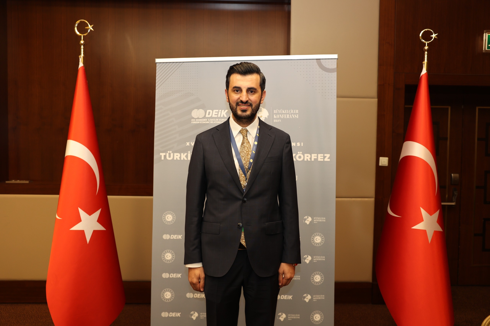

About - Hakkında
Halit Acar, 1987 yılında Cizre’de doğdu. 2011 yılında İngiltere’de Sussex Üniversitesi Ekonomi ve Yönetim bölümlerinden mezun oldu. 2012 yılından bu yana Universal Acarsan Genel Müdürü olarak görev yapmakta; Acarsan Holding’in Irak’taki tüm operasyonlarını yönetmektedir. Bu kapsamda Irak’ın farklı şehirlerinde toplam 12 sağlık kompleksinin (9’u tamamlanmış, 3’ü yapım aşamasında) proje geliştirme, inşaat, teknik donanım ve işletmeye alma süreçlerini yönetmiştir. 2015–2020 yılları arasında Türkiye’nin prestijli gayrimenkul projelerinden ICONOVA’nın hayata geçirilmesinde liderlik rolü üstlenmiş; 2020’den itibaren Acarsan Holding’in jeotermal ve güneş enerjisi projelerinde de aktif görev almaktadır. Halen Acarsan Holding Yönetim Kurulu Üyesi olarak grubun inşaat, sağlık ve enerji yatırımlarının denetiminden sorumludur. 15 Ocak 2022’de DEİK Türkiye–Irak İş Konseyi Başkanı seçilen Acar, aynı zamanda DEİK Yönetim Kurulu Üyesi ve Orta Doğu & Körfez Bölgesi Koordinatör Başkan Yardımcısıdır. Görev süresi boyunca “Medya Görünürlüğü”, “Üstün Performans” ve “Networking” kategorilerinde ödüller almıştır. Daha önce Gaziantep FK Yönetim Kurulu Üyeliği yapmış olan Acar, halen Gaziantep Emniyet Gücü Hokey Kulübü ve GAGEV Yönetim Kurulu Üyesidir. Halit Acar evli ve iki çocuk babasıdır; ileri düzeyde İngilizce, orta düzeyde Arapça bilmektedir.
Halit Acar was born in 1987 in Cizre, Türkiye. He graduated in 2011 from the University of Sussex with degrees in Economics and Management. Since 2012, he has served as General Manager of Universal Acarsan, overseeing all Acarsan Holding operations in Iraq. In this role, he has led the development, construction, technical delivery, and commissioning of 12 healthcare complexes across Iraq, nine of which have been completed and three are currently under construction. Between 2015 and 2020, he played a leading role in the realization of ICONOVA, one of Türkiye’s most prestigious real estate projects. Since 2020, he has also been actively involved in the management of geothermal and solar power plant projects within Acarsan Holding. He currently serves as a Board Member of Acarsan Holding, responsible for overseeing the Group’s investments in construction, healthcare, and energy sectors. In January 2022, he was elected Chairman of the DEİK Türkiye–Iraq Business Council and Vice Coordinator Chairman for the Middle East & Gulf Region. He is also a Board Member of DEİK. During his tenure, he has received awards for Media Visibility, Outstanding Performance, and Networking. Previously, he served as a Board Member of Gaziantep Football Club and currently holds board positions at the Gaziantep Police Force Hockey Club and GAGEV (Gaziantep Development Foundation). Halit Acar is married with two children. He speaks advanced English and intermediate Arabic.